Same mark. Pick a number (e.g. 01 or 06). Reply with the id and I’ll ship it as org + product favicon.
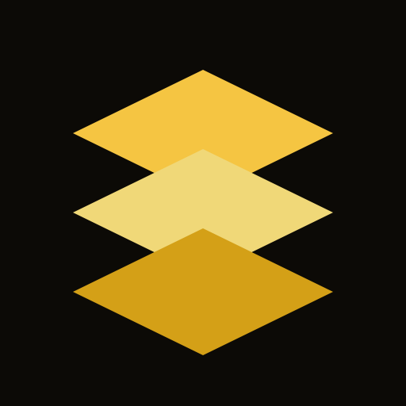
04-amber-gold Caution gold from site tokens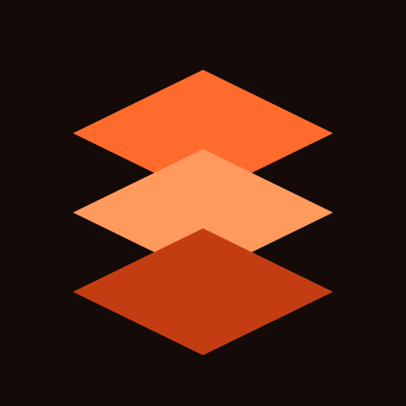
05-ember Hot ember / forge fire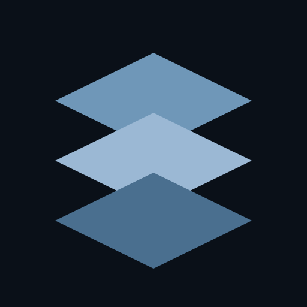
06-blueprint Foundry blueprint blue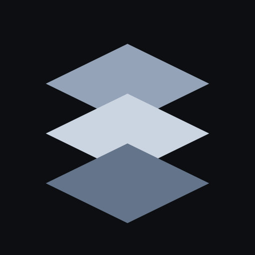
07-slate-steel Cold steel layers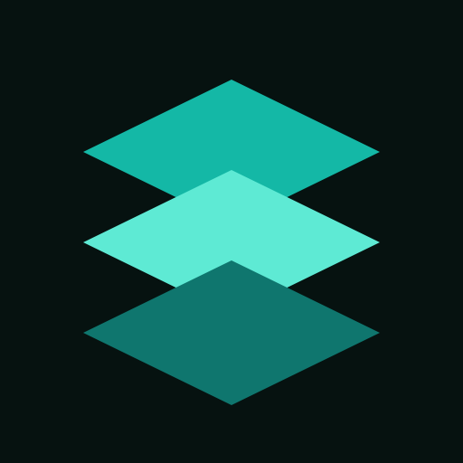
08-teal-foundry Teal industrial (pair with Live Build family)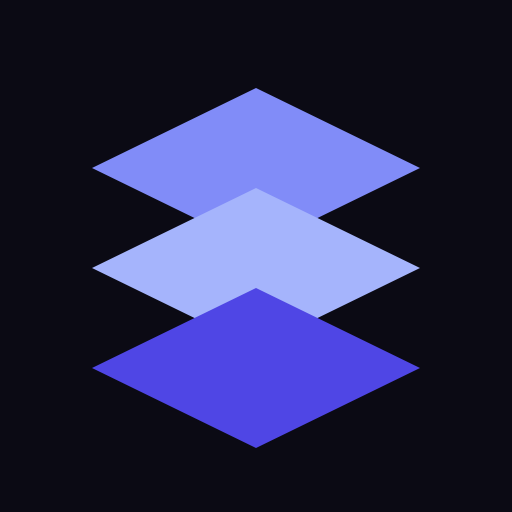
09-indigo-night Night indigo (fleet cousin to RolePatch)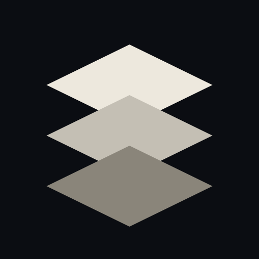
10-mono-cream Ink cream on workshop black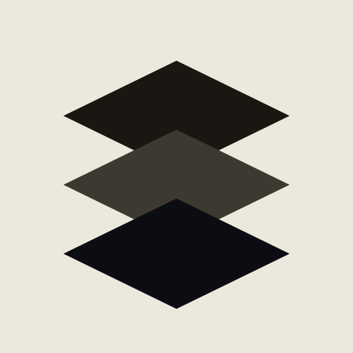
11-mono-invert Light mode invert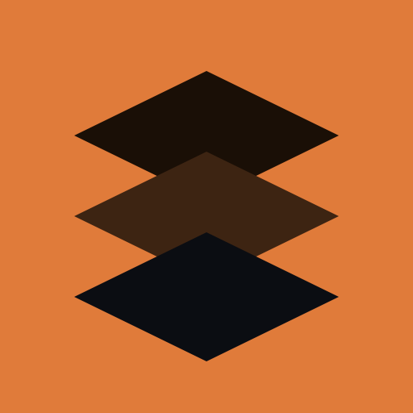
12-fullbleed-copper Full-bleed copper field, dark layers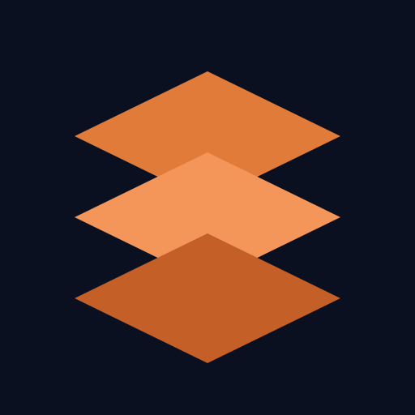
13-copper-on-navy Navy base (closer to old showcase navy)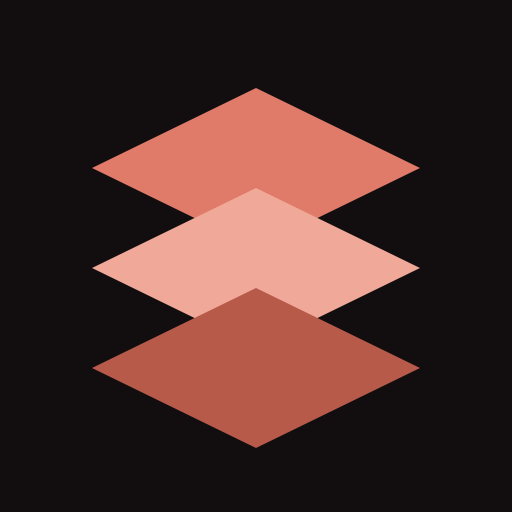
14-soft-rose-copper Warmer rose-copper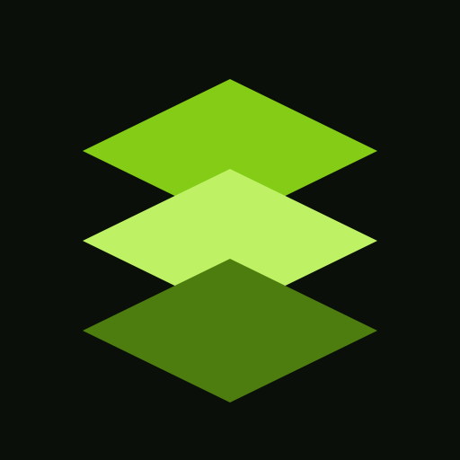
15-lime-signal High Signal-adjacent lime (probably too far)